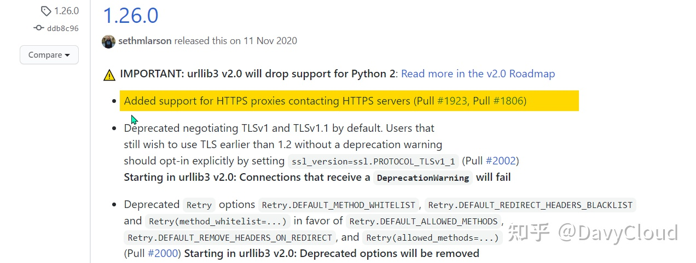
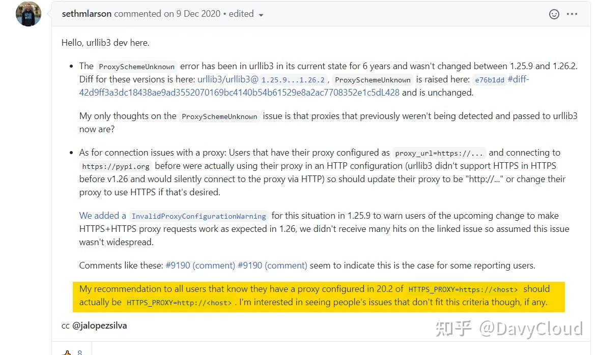
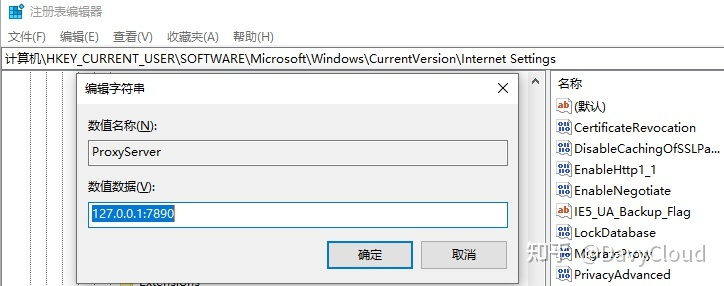
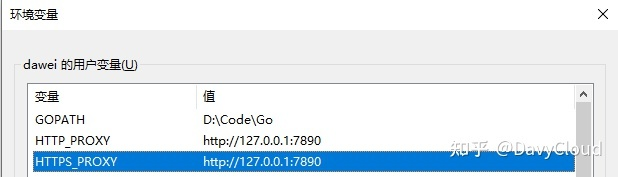
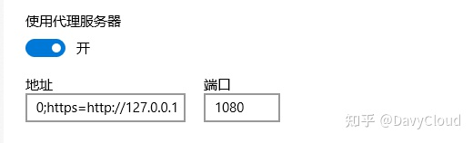
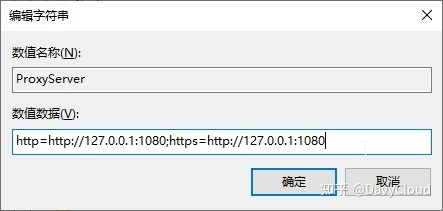

来源：https://zhuanlan.zhihu.com/p/350015032
最近遇到的一个问题，在搞清楚之后才发现这么多年的 HTTPS_PROXY 都配置错了！
# 起因
想用 Python 在网上下载一些图片素材，结果 requests 报 requests.exceptions.ProxyError ，具体的错误信息见下面。当然第一时间是把系统代理关了，结果访问就正常了。
如果只是这样，可能我就觉得是代理有问题，然后关了用就行了，但是偏偏想要下载的资源里是必须要走代理的，所以只能想办法解决。
下面先介绍一下具体的情况：
# 解决过程
操作系统：Windows 10
Python: 3.8（有虚拟环境）
requests 通过代理访问外网时报错如下：
Traceback (most recent call last): | |
File "E:\code\Python\.venv\smalltools\lib\site-packages\urllib3\connectionpool.py", line 696, in urlopen | |
self._prepare_proxy(conn) | |
File "E:\code\Python\.venv\smalltools\lib\site-packages\urllib3\connectionpool.py", line 964, in _prepare_proxy | |
conn.connect() | |
File "E:\code\Python\.venv\smalltools\lib\site-packages\urllib3\connection.py", line 359, in connect | |
conn = self._connect_tls_proxy(hostname, conn) | |
File "E:\code\Python\.venv\smalltools\lib\site-packages\urllib3\connection.py", line 496, in _connect_tls_proxy | |
return ssl_wrap_socket( | |
File "E:\code\Python\.venv\smalltools\lib\site-packages\urllib3\util\ssl_.py", line 432, in ssl_wrap_socket | |
ssl_sock = _ssl_wrap_socket_impl(sock, context, tls_in_tls) | |
File "E:\code\Python\.venv\smalltools\lib\site-packages\urllib3\util\ssl_.py", line 474, in _ssl_wrap_socket_impl | |
return ssl_context.wrap_socket(sock) | |
File "C:\Users\Davy\AppData\Local\Programs\Python\python8\lib\ssl.py", line 500, in wrap_socket | |
return self.sslsocket_class._create( | |
File "C:\Users\Davy\AppData\Local\Programs\Python\python8\lib\ssl.py", line 1041, in _create | |
self.do_handshake() | |
File "C:\Users\Davy\AppData\Local\Programs\Python\python8\lib\ssl.py", line 1310, in do_handshake | |
self._sslobj.do_handshake() | |
OSError: [Errno 0] Error |
因为浏览器访问是没有问题的，代理本身应该没有问题。
按照这个错误信息在网上搜了一下，比较接近的帖子给的解决方案有安装 ssl 模块之类，都照着检查了一遍，问题还是没有解决。
因为网上的内容有些年头了，并且我觉得使用代理是非常常见的场景，既然没多少人报这个问题，那么很可能只是偶然的 bug，于是想着把版本再升级试试。
升级到 python 3.9 ，错误仍然存在，提示略有变化：
Traceback (most recent call last): | |
File "C:\Users\Davy\AppData\Local\Programs\Python\python9\lib\site-packages\urllib3\connectionpool.py", line 696, in urlopen | |
self._prepare_proxy(conn) | |
File "C:\Users\Davy\AppData\Local\Programs\Python\python9\lib\site-packages\urllib3\connectionpool.py", line 964, in _prepare_proxy | |
conn.connect() | |
File "C:\Users\Davy\AppData\Local\Programs\Python\python9\lib\site-packages\urllib3\connection.py", line 359, in connect | |
conn = self._connect_tls_proxy(hostname, conn) | |
File "C:\Users\Davy\AppData\Local\Programs\Python\python9\lib\site-packages\urllib3\connection.py", line 496, in _connect_tls_proxy | |
return ssl_wrap_socket( | |
File "C:\Users\Davy\AppData\Local\Programs\Python\python9\lib\site-packages\urllib3\util\ssl_.py", line 432, in ssl_wrap_socket | |
ssl_sock = _ssl_wrap_socket_impl(sock, context, tls_in_tls) | |
File "C:\Users\Davy\AppData\Local\Programs\Python\python9\lib\site-packages\urllib3\util\ssl_.py", line 474, in _ssl_wrap_socket_impl | |
return ssl_context.wrap_socket(sock) | |
File "C:\Users\Davy\AppData\Local\Programs\Python\python9\lib\ssl.py", line 500, in wrap_socket | |
return self.sslsocket_class._create( | |
File "C:\Users\Davy\AppData\Local\Programs\Python\python9\lib\ssl.py", line 1040, in _create | |
self.do_handshake() | |
File "C:\Users\Davy\AppData\Local\Programs\Python\python9\lib\ssl.py", line 1309, in do_handshake | |
self._sslobj.do_handshake() | |
ssl.SSLEOFError: EOF occurred in violation of protocol (_ssl.c:1122) |
好歹错误信息有点变化，于是按照最下面 ssl.SSLEOFError: EOF occurred in violation of protocol (_ssl.c:1122) 去谷歌，并没有找到解决办法，但是发现有人在不久前遇到了相同的问题，并且通过降级 Python 3.7 解决了。
参见：https://v2ex.com/t/738031
先重新安装 Python 3.7 试了一下果然可行，并且意外地发现在 Python 3.8 环境下也是可行的，也就是可以排除 Python 版本的问题，那么自然就怀疑是某个包引发的。
通过简单地对比和排除，很快就发现了问题所在：
模块 urllib3 的版本，报错的是 1.26.3 ，没报错的是 1.25.11
在原报错环境中使用下面命令重装低版本 urllib3 ：
pip install urllib3==1.25.11 |
然后测试果然就没问题了。
# 问题根源
先查了一下 urllib3 的更新日志，应该是 1.26.0 的修改导致的：

按照这个更新日志，明明应该是增加了 HTTPS 的支持，怎么反而让它失效了呢？
我一时搞不明白这个问题，但是想起了我最近遭遇到了另一个问题，然后意外地找到了真相：
# 同样遭遇代理错误的 pip
同样是在这个环境中，其实在一开始我就遭遇了 pip install 安装包失败的问题，报错信息是：
'ProxyError('Cannot connect to proxy.', FileNotFoundError(2, 'No such file or directory'))'
同样是取消系统代理就能正常安装，就没太在意了。
但是在降级 urllib3 解决了 requests 的 ProxyError 之后，我开始怀疑 pip 安装是不是也是这个问题呢？
直接在降级了 urllib3 的环境中测试了一下，错误仍然存在，但是版本整体较低的环境中，是没有问题的！
于是继续对比版本包，结果在 pip 包的路径下发现有一个 _vendor\urllib3 目录，原来 pip 是直接把 urllib3 集成到了自己的包里面，不受系统安装包的影响。检查其中的 _version.py 里的版本信息，果然也是 1.26.x 。
出错的 pip 的版本是 20.3 ，把 pip 也降级到 20.2 以下，就没有问题了。
显然，鉴于 pip 的高频使用，这种致命的问题不可能没人报，所以在 pip 项目的 issue 列表里很快就找到了相关讨论：
https://github.com/pypa/pip/issues/9216
# urllib3 更新了啥
根据 https://github.com/pypa/pip/issues/9216#issuecomment-741836058 所说，更改代理配置可以解决问题：

绕了好大一圈大概明白是怎么回事了：
以前 urllib3 其实并不支持 https 代理，也就是说代理服务器的地址虽然大家配置的是 https ，但是一直都是悄无声息地就按照 http 连接的，刚好代理服务器确实也只支持 http ，所以皆大欢喜。
现在 urllib3 要支持 https 代理了，那么既然配置代理是 https 就尝试用 https 的方式去连接，但是由于代理服务器其实只支持 http ，所以没法处理请求， ssl 握手阶段就出错了。
注意，这里的
https是指代理服务器自己的，和我们要访问的目标网站无关。
因为目标网站的协议和代理服务器的协议并不要求一样，所以只需要更改代理配置 ，将访问 https 网站的代理服务器地址改为 http 即可，也就是这样：
HTTPS_PROXY=http://proxy_ip:proxy_port |
前面的 HTTPS_ 表示，如果访问的站点是 https 的，需要走这里配置的代理服务器；后面的 http:// 则表示这个代理服务器自己只支持 http 。
而我们一直以来看到的配置建议，这两者前后通常都是保持一致的：
HTTP_PROXY=http://proxy_ip:proxy_port | |
HTTPS_PROXY=https://proxy_ip:proxy_port |
这个是错误的！
# 代理到底该咋配
Windows 10 中的代理服务器设置如下，并没有区分什么 http 和 https :
# 手动给 requests 传入代理配置
requests 的请求参数中是支持指定代理服务器的，刚开始的代码没有指定：
url = 'https://github.com/' | |
r = requests.get(url) |
前面在尝试解决问题的时候，也试过了传入代理服务器配置：
proxies={ | |
'http': 'http://127.0.0.1:7890', | |
'https': 'https://127.0.0.1:7890' | |
} | |
r = requests.get(url, proxies=proxies) |
上面两种写法的效果其实是差不多一样的，结果当然也是一样出错。
按照上面 issue 中的修改建议改为：
proxies={ | |
'http': 'http://127.0.0.1:7890', | |
'https': 'http://127.0.0.1:7890' # https -> http | |
} | |
r = requests.get(url, proxies=proxies) |
运行结果就 OK 了。
好了，现在我们可以不用降级版本了，但是却要多出一段配置，要改代码，总归还是不爽。
其实，如果是 Linux 系统是没这个问题的，本来代理配置就是通过环境变量 HTTP_PROXY 和 HTTPS_PROXY 来设置的，改一下环境变量的值就可以了，麻烦还是在 Windows 系统中。
要搞明白 Python 代码是如何获取 Windows 系统中的代理服务器设置的。
# 谁解析的系统代理配置
在代码中不难发现，当用户有传入 proxies 参数时， requests 是通过标准库提供的 getproxies 函数来获取系统代理服务器配置的：
>>> # 如果是 python 2，则是 from urllib import getproxies | |
>>> from urllib.request import getproxies | |
>>> getproxies() | |
{'http': 'http://127.0.0.1:7890', 'https': 'https://127.0.0.1:7890', 'ftp': 'ftp://127.0.0.1:7890'} |
上面显示的结果就是对应到截图中的代理配置。
注意，
urllib和urllib3不是一个库，前者是 Python 标准库自带。
继续看代码：
elif os.name == 'nt': | |
def getproxies(): | |
"""Return a dictionary of scheme -> proxy server URL mappings. | |
Returns settings gathered from the environment, if specified, | |
or the registry. | |
""" | |
return getproxies_environment() or getproxies_registry() |
在 Windows 系统中，先从环境变量获取，如果没有则从注册表获取。
getproxies_environment 的逻辑比较简单，基本和 Linux 系统是一致的，就是环境变量配置成啥样就是啥样。这里我并没有配置环境变量，自然结果是空，最终的结果要看 getproxies_registry 。按照其中的代码，从注册表中获取的配置如下：

代码里有两个处理逻辑：
proxyServer = str(winreg.QueryValueEx(internetSettings, | |
'ProxyServer')[0]) | |
if '=' in proxyServer: | |
# Per-protocol settings | |
for p in proxyServer.split(';'): | |
protocol, address = p.split('=', 1) | |
# See if address has a type:// prefix | |
if not re.match('(?:[^/:]+)://', address): | |
address = '%s://%s' % (protocol, address) | |
proxies[protocol] = address | |
else: | |
# Use one setting for all protocols | |
if proxyServer[:5] == 'http:': | |
proxies['http'] = proxyServer | |
else: | |
proxies['http'] = 'http://%s' % proxyServer | |
proxies['https'] = 'https://%s' % proxyServer | |
proxies['ftp'] = 'ftp://%s' % proxyServer |
其中第一种是「每种协议各自配置」，下面第二种情况是「所有协议一个配置」。
在第二种情况中，如果带了 http: 就只配置 http 协议，否则（也就是我们现在的场景），针对同一个 proxyServer，添加 3 种协议。
# 在 Windows 中如何配置代理
第一种方法：通过环境变量设置：

结果：
>>> getproxies() | |
{'https': 'http://127.0.0.1:7890', 'http': 'http://127.0.0.1:7890'} |
一旦设置了环境变量，程序就直接从环境变量获取，系统的配置也就失效了。
第二种方法：按照上面的代码倒推出来系统配置：

其中的地址框里的内容是：
http=http://127.0.0.1:1080;https=http://127.0.0.1 |
其中最后的端口只对最后面的那个地址有效，分号前面的地址需要加上端口。
对应的注册表中的值是：

显然这种方式有点诡异和麻烦，目前也没看到有相关的说明，不确定是否会影响其它程序的判断。
如此看来，还是第一种方法比较靠谱，就是不能利用系统配置有点遗憾。
# 我的疑惑
那么，在用户只给出了代理服务器的 IP 和 端口的情况下，原有的处理逻辑是不是错误，我也不敢断言。
回到最初犯错的地方：
HTTP_PROXY=http://proxy_ip:proxy_port | |
HTTPS_PROXY=https://proxy_ip:proxy_port |
我现在还有一个疑惑点是，真的会存在一个代理服务器，能够在同一个端口同时支持 http 和 https 么？如果是那样的话，为啥平常的 web 服务器还要有 80 和 443 两个端口对应不同的服务。
反过来，如果一个端口不可以同时支持两个协议的话，那么上面的配置的错误则更加明显，处理逻辑也就很有问题。
你对此有什么看法和理解，欢迎在评论区讨论！
# 总结
通过解决代理服务器错误，对 Python 是如何处理代理服务器配置有了更深入的了解。